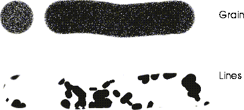

Figure 5.4 The Generate Texture pop-up menu
You create and modify images by applying inks to the canvas through Tools and Brushes. N-Paint's built-in ToolBox contains several basic tools, which you can use to create your own custom tools.
In this chapter we'll examine the tools and brushes which are part of the default toolbox. You use tools and brushes to apply inks to images in N-Paint. We'll cover
In this Chapter
You make changes to the canvas (or the matte) using a combination of one of the Shape tools or brushes in the toolbox and an ink. Shape tools apply ink to the canvas through a defined shape, such as an oval, a quadrangle, a text font, a line, etc. Brushes apply ink to the canvas based on cursor movement.
Tools & Brushes
Each of the tools in the default toolbox is described later in this chapter, while inks are covered in Chapter 6.
To select a tool or a brush, (CLICK-L) on the tool's icon in the toolbox.
You control how ink in applied to the canvas with a brush by changing the brushs drawing parameters. Each brush has its own individual parameters, but each shares three broad classes of parameters.
Using Brushes
Ink
The Ink section of the Tools menu controls which ink will be applied to the canvas through the currently selected brush. To select an ink, (CLICK-L) on the field to the right of the word Ink. Each ink has its own specific parameters, so the appearance of the ink section will change depending upon which ink is selected. Inks are described in detail in Chapter 6.
Texture Options
The texture component of a brush is an additional opacity pattern through which ink is applied to the canvas. To use a texture, (CLICK-L) on the Use Texture toggle field, then select a texture image and offset.
Image
You can use a single-component (matte) image to generate a brush texture. (CLICK-L) on this field to select a single component (matte) image from among those loaded into memory. (CLICK-L) on a Texture to select it.
Brush Offset Options
(CLICK-L) on the Offset field to select from a number of brush offset options. Offset options affect the way in which the texture is applied through the brush.
Tiled
The selected texture image gets tiled over the canvas, independent of the position of the brush. The tiling effect is only visible if the texture matte is larger than the canvas on which it is being used, in which case, the texture pattern repeats continuously across the canvas.
Random
When using a matte to create texture, the offset of the texture image is randomly selected for every brush stamp.
Dragged
The texture image is tied to the brush as it paints. The texture effect is identical for every stamp. This effect is very visible if you use line tracking with for a brush with a high spacing value.
Make Texture
(CLICK-L) on this button to automatically create a matte texture and copy it into the STENCIL-BACKUP. (CLICK-L) on a texture to create it.
Figure 5.5 shows the appearance of these textures as applied through the round brush.

Drawing Options
Drawing options are controlled by the Options menu, located on just to the left of the commands section of the tools menu
Track
Changing the brush tracking affects how the selected brush is applied to the canvas, as described below. (CLICK-L) in the Track text box to display the Tracking Mode pop-up menu:
(CLICK-L) on the desired tracking mode to select it.
Point
Paints only when you hold down the mouse button or pen and move the brush. The application of paint is triggered by the movement of the brush. If you move the mouse very rapidly, you will see gaps between the brush stamps.
Continuous
Similar to point mode, except that paint is continually applied to the canvas through the brush, regardless of whether or not you move the brush. This is more noticeable when using a filter ink, or a color ink with a low opacity setting.
Stamp
Applies the brush once each time you click the mouse. You must release the mouse or let up on the pen and click again every time you want to draw.
Smooth
Similar to point mode, except that the brush does not skip if you move the mouse or pen quickly. (However, for large brushes, the brush may not follow the mouse in real time.)
Line
Paints along a path you specify with a pair of endpoints. To paint in line mode:
1. (CLICK-L) to define the starting point.
2. Move the mouse and (CLICK-L) again to define the endpoint.
Rubberband
Draws from point to point, applying the brush to each segment as it is defined.
1. (CLICK-L) to start the line.
2. Move the brush and (CLICK-L) again to draw a segment.
Spline
Similar to Rubberband mode, in that you specify a series of segments. When you end the path, the brush is applied along a spline path defined by those segments.
1. (CLICK-L) to start the line.
2. Move the brush and (CLICK-L) again to draw a segment.
This controls what color components of the canvas are affected by the ink.
SubPixel
If selected, the brush draws with a smoother (anti-aliased) line. This is normally necessary only when using very small brushes where softness and opacity components are less significant.
Pressure
Controls the brush opacity with the pressure of the pen on the tablet. If pressure is selected, the harder you press, the more opaque will be the effect of the brush. This feature is not used with the mouse.
Shadow
Drop shadows can be drawn behind brush operations. To draw a shadow, make sure that Shadow is checked, then (CLICK-L) on Set to define the shadow parameters.

Figure 5.11 Left, shadow; middle, extruded; right, PatExtruded
Angle
Specifies the orientation of the shadow (the direction from which the "light" is coming).
Shadow
The middle column of parameters specify the characteristics for the shadow option:
Highlight
All the parameters for the highlight are identical to that for the shadow, except that they apply to the highlight portion of the effect.
Paths
Available with Long Menus only
When you (CLICK-L) on the Paths button, the Brush Path Operations pop-up menu appears:
Show Paths
Available only with Long menus
Accumulate
Available only with Long menus
LoadBuf
available only when Accumulate is OFF
See the section "Managing Images in N-Paint," on page 1-12 for more about the image processing buffer.
SaveBuf
available only when Accumulate is off
See the section "Managing Images in N-Paint," on page 1-12 for more about the image processing buffer.
N-Paint includes two types of brush. By modifying the parameters of these brushes and combining them with different inks, you can create a wide variety of custom brushes. You can save these custom brushes for future use. This section describes the basic parameters for the Cutout brush and the Round brush.
Brushes for Editing Images
Cutout Brush
Create Cutout
Use this button to specify the method by which you want to define the cutout. (CLICK-L) on Create Cutout and the Create Cutout pop-up menu appears:
Edit Cutout
Lets you change the shape of the cutout brush. The main Tools menu is replaced with the Cutout Edit menu:
Figure 5.18 Setting the offset for the cutout brush
Opacity sets the opacity for the cutout brush.
Cutout Operations
Operations allow you to modify the cutout brush. (CLICK-L) on Operations to reveal the Brush Operations pop-up menu.
Figure 5.21 Inverting a cutout
Opacity
Specifies the opacity of the brush when it is applied to the canvas.
Preview
Specifies the opacity of the brush as it is positioned over the canvas. Specify a lower opacity to see the canvas under the brush.
Round Brush
Size
Size determines the radius of the brush in pixels.
Opacity
Opacity determines the percentage of pixels under the brush onto which the current ink is applied. The higher the number, the more pixels are affected. (Remember, a brush may apply either a color or an effect.)
Hardness
Hardness is the "smoothness" of the brush's edge, expressed as a percentage. A higher value gives the edge of the brush a "sharper" feel, while a lower value causes the edges to feel "soft." With hardness set to 100%, there is no soft-edging.
There are two types of shape tool:
Using Shape Tools
Most of the Editing tools share three basic parameters, Ink, Texture, and Drawing Options.
Ink
Ink parameters are set in exactly the same way for tools as for brushes.
Texture
The texture determines the "transparency" of the ink applied to the canvas. When you apply ink to an image using a shape, the ink that you select is applied to an image through a matte. It may be helpful to think of the ink texture as another layer, over the image, through which ink is applied:
To select an ink texture, (CLICK-L) in the Texture edit box:
Each of these mattes is described below.
Opaque
This is the default ink texture. If selected, the ink is opaque; it has 100% effect on any pixels to which it is applied. If you select a color ink, for example, the color is applied to the canvas at full strength. If you select a filter or recolor ink, the filter or recolor process is applied at full strength to the canvas.
Constant
Specifies a single opacity constant, from 0% to 100%.
Gradient
Specifies a gradation in the opacity of the ink. As with gradient inks, the opacity gradation may be vertical, horizontal, radial, or angular:

Refer to the section "Multi Grad," on page 6-5 for a description of the gradient patterns.
Edge key
Grain
The opacity of the ink is applied through a grainy texture.
Grid
The ink opacity is applied through a grid-shaped matte. The characteristics of the matte are specified in the pop-up dialog box.
Drawing Options
Drawing options allow you to enhance the effect of your shape operations by adding effects such as shadows, or controlling how colors are mixed in your images.
Shadow
Shadow parameters are the same for tools as for brushes. To review how to use Shadow effects, see "Shadow," on page 5-9.
Mixing
Available only with Long menus
Channels
Available only with Long menus
Channels work in exactly the same way for shape tools as for brushes. To review how Channels affect tool performance, see "Channels," on page 5-7.
Clear
(CLICK-L) on the clear button to restore tool drawing options to their default values.
Shape Tool Commands
In addition to the parameters we just described, Shape tools have several commands you can use to review, edit, and repeat shapes you've defined on the canvas. When you select and edit shapes, you're only manipulating the shape itself, not any paint that's been applied to the canvas through that shape. For example, if you use a certain polygonal shape to composite an image onto the canvas, and then edit that shape, the composited image will be unaffected. Only the shape you used to define it will be changed.
Shape Edit commands appear at the bottom of the each tool's parameter menu:
Using Repeat vs. Undo
You can combine the Undo and Repeat commands to "tweak" a particular shape until it's just the way you want it. Say, for example, that you defined a shape for compositing an image. After you do the operation, you may decide that you really wanted to use a Scale Image ink instead of a Reveal Image ink. You can easily accomodate this change using the Undo and Repeat keys together:
1. (CLICK-L) on the Undo key in the Commands section of the menu.
2. Select the Reveal Image ink.
Shapes vs. Custom Tools
It's important to understand the differences between a custom tool and a shape that you can edit.
Abort
If you begin to draw a shape, then decide you want to start it somewhere else, (Click-L) on the Abort button or (Click-M) to restart the shape.
Show
Lets you cycle through the shapes that you have used to draw on the canvas. A history of all specified shapes is preserved:
Repeat
Redraws the last shape using the current menu parameter settings. This can be very useful in performing the different operations on the same area. For example, what if you draw a shape, but decide you don't like the color. Just (CLICK-L) on Undo, select another color, then (CLICK-L) on Repeat.
Edit
Lets you edit the last shape of the currently selected type. If you select Edit when working with one of the shape tools, the shape edit menu is displayed:
Figure 5.34 Setting the position of a shape numerically
Mode
The mode commands let you specify which
Draw

N-Paint includes six tools you can use to draw on the canvas, the Quad tool, Polygon tool, Line tool, Oval tool, Text tool, and Fill tool.
Shape Tools For Editing Images
Quad Tool
Rect
Specify a rectangle of any size by drawing it on the canvas.
Size
Lets you specify a rectangle using numeric values for the width and height.
Ratio
Specify a ratio of width to height for any rectangle you draw. This is useful for drawing squares (set both to 1), or for drawing quadrangles of a specific aspect ratio.
Quad
Specify an arbitrary quadrilateral (four-sided object). When creating a quadrilateral, you (CLICK-L) to define each of the first three points in the shape; the third point is joined with the starting point to complete the shape.
Polygon Tool
Sketch
Determines how you draw the polygon on the canvas.
To abort the drawing of the shape, (CLICK-L) on Abort or (SHIFT-L) or (TABLET-ABORT).
Spline
If selected, the points on the perimeter of the polygon are joined using Kochanek splined (curved) lines.
Outline
Draw only the outline of the polygon on the canvas.
Soft
Measures the softness of the polygon's edges, measured in pixels.
Line Tool
This tool allows you to specify and apply operations to the canvas through any line shape.
Separate
If selected, lines are drawn as individual segments; you specify a start and end point, and then the operation is applied. To abort the drawing of the line, (CLICK-L) on Abort or (SHIFT-L) or (TABLET-ABORT).
Connected
Lets you draw any number of connected points for a line; the operation is applied to the canvas after you have specified the last shape. To close the shape, (CLICK-L) on Do It or (CLICK-M) or (TABLET-EXIT). To abort the drawing of the shape, (CLICK-L) on Abort or (SHIFT-L) or (TABLET-ABORT).
Sketch
Sketch mode allows you to draw a path freehand on the canvas without clicking at each point.
Spline
If selected, the line is drawn between the specified points using a spline interpolation.
Width
The thickness of the line, measured in pixels.
Soft
The softness of the line, measured in pixels.
Oval Tool
Circle?
If selected, constrains the oval tool to drawing circles. If not constrained, draws an oval (ellipse).
Outline
Draws only the outline of the oval.
Softness
The softness of the oval, measured in pixels.
Width
The thickness of the oval, measured in pixels.
Text Tool
This tool allows you to specify and apply operations through any text shape.
If you (CLICK-L) on the text tool, the following menu appears:
Text
Type in the text you want to apply to the canvas here.
Font
Specify the font to be used. A default font is displayed when you start up N-Paint. If you (CLICK-L) in the Font field, the following menu is displayed:
Figure 5.56 Fonts in the default fonts directory not yet loaded into memory
Figure 5.57 Browsing font icons
Rot
The angle (rotation), in degrees, by which to rotate the text.
Skew
The degree by which to italicize the text. Negative values produce a backward slant; positive values a forward slant. A value of 0.0 does not skew the text at all.
Although you can specify any value for skew, typical values are approximately between -2 and 2.
Space
Specifies the amount of space between individual letters, in pixels.
XScl
Specifies the horizontal scaling of the text. Changing the X scale of a font affects it as described in Table 5.1:
Outline
Specifies that the text is to be drawn as outline characters. If turned on, characters are drawn as outlines.
Width
The thickness of the letter's outline, measured in pixels.
Soft
The softness of the letter's outline, measured in pixels.
Figure 5.58 shows the various text effects:
Curve
Lets you create and modify a curve (actually a Kochanek spline) along which to apply text. See the section "Text Edit Mode," on page 5-37 for a description of editing text and the curves they sit on.
Compositing Text onto an Image
After you have specified the effects you want to use when applying text, move the cursor over the image. An outline of the text appears over the image showing the currently specified parameters.
Text Edit Mode
As mentioned in the previous section, you move the cursor over the canvas to see an outline preview of what text would look like if applied.
1. Enter the text you want to add in the Text box.
2. (CLICK-L) on the Edit button.
Suppose you entered the letters "Xyz" in the Text box. When you entered text edit mode, an outline looking something like that in Figure 5.59 would be displayed:
3. Note that the text edit menu also appears across the bottom of the screen.
Abort
Aborts from text edit mode without saving any changes.
Exit
Exits from text edit mode and saves any changes you have made since entering this mode.
Composite
Applies the text to the canvas at the currently selected position. (This saves you the step of exiting from text edit mode and reapplying the text to the canvas.)
Reset
Undoes any changes to the text that have been made since you entered text edit mode.
SetOffset
Move the shape on the canvas.
Mode
The various modes determine let you specify what you want to do with a selected control point.
Draw
The Draw options determine how characters are displayed in the text edit mode.
Undoing Changes
If you decide that you don't like the changes you have made in text edit mode, (CLICK-L) on the Text Ops box. The following menu appears:
Placing Text along a Curve
If you want to place the text you have specified in the Text box along a curve:
1. (CLICK-L) on TextOps>Define Curve.
Figure 5.64 Setting up the curve for text placement
In Edit mode, a drawn curve with three characters on it might look something like this:
To modify the curve, first go into Edit mode:
Where are Fonts Located?
The default font directory is:
/usr/local/ngc/fonts/bitstream/
ln -s /usr/fonts /usr/local/ngc/fonts/bitstream
ln -s actual_directory expected_directory
How are Fonts Stored?
If you ever look in the fonts directory from a UNIX shell, you will see files with two different extensions:
| Extension | Description |
|---|---|
|
.bsfont
|
The scalable font.
|
|
.icon
|
The icon displayed in Browse mode.
|
For each font, there will be two files:
fontname.bsfont
fontname.icon
Fill Tool
Draw
The draw mode determines how the extent of the area to be filled is calculated.

Figure 5.67 Fill parameters in While mode
Figure 5.68 Fill parameters in Until mode
Test
Specifies the type of test to perform to match pixels.
Border
Specifies the boundary pixel color to use when Draw is set to Until. (CLICK-L) on the color field to select a color.
Range
A value from 0 to 1.0, used to specify how close a pixel's color must be in order to meet the conditions specified in Test. So, for example, if you selected a seed color with RGB values of .75, .22, and .65, and a range of .02, colors in the range .73-.77, .20-.24, and .63-.67 would be affected by the fill operation.
Soft
Specifies an additional range of values that are affected by the fill, making a fill smoother around the edges when being applied to a continuous tone image. (Specify a range between 0.0 and 1.0, with a higher value producing a softer edge.)
The Pasteup, Color Picker, and Pan/Zoom tools are used to move the image around on the canvas, to pick colors from specific parts of the canvas, and to create composite images.
Shape Tool Utilities
Pasteup Tool
The Pasteup tool lets you use the layering capabilities of N-Paint to do both compositing and shape manipulation. When you select the Pasteup tool, you go directly into pasteup mode. There, you may edit any shape you draw just as you did in the shape editor, described in "Shape Tool Commands," on page 5-21. In pasteup mode, there are two layers; a foreground layer (also called the "pasteup layer") and a background layer (typically the canvas).

When you select the pasteup tool, the following menu is displayed:
Background/Foreground Layer Display
Compositing in Pasteup Mode
One of the most useful features of the pasteup layer is its ability to display two images at the same time, which makes using tools such as the reveal brush easy and intuitive.
Try the steps below to get used to the tools in N-Paint:
3. (CLICK-L) on Load Foreground.
4. Select an image from memory from the list box that appears.
The Color Picker Tool

To use the color picker tool, (CLICK-L) on its icon. The Color Picker menu appears:

Adding a Captured Color to the Palette
Once you've capture a color, you can save it to the current palette so that you can use it again later.
1. (CLICK-L) on the Palette Scroll bar to find an empty palette slot.
2. Move the cursor over an empty slot, and (CLICK-L).
1. (CLICK-L) on the Get Canvas Colors button under the palette.
The Pan/Zoom Tool
Use the green buttons to zoom in and out from the image.
Figure 5.80 Soft zoom dialog box
Panning
You can move the image around on the canvas without zooming. Lateral movement of the image is called panning. To pan the image:
1. (CLICK-L) on the Pan/Zoom tool icon.
2. (DRAG-L) the image in the direction you want to move it.
Saving Custom Tools
You can save, copy, and load custom toolboxes just like other N-Paint elements. Just (CLICK-L) on the tool-box edit field to reveal a menu of toolbox operations. To learn more about these operations, see "Working with Palettes and Toolboxes," on page 4-8.
Copyright © 1996, Nichimen Graphics Corporation. All rights reserved.